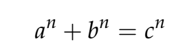

class: center, middle # Boolean Expressions --- A ** boolean ** expression is an expression that is either true or false. ```python >>> 5 == 6 False >>> 6 == 6 True ``` --- # Relational Operators Used to establish some sort of relationship between the two operands. Examples are ** less than **, ** greated than ** or ** equal to ** operators. - Less than ( `<` ) - Greater than ( `>` ) - Equal to ( `==` ) - Not equal to ( `!=` ) - Less than or equal to ( `<=` ) - Greater than or equal to ( `>=` ) --- Relational operators work for numbers and strings ```python >>> 'abc' > 'aaa' True >>> 'abc' == 'bcd' False ``` --- # Logical Operators Used in local expressions where the ** operands ** are either `True` or `False`. There are three basic types of logical operators. The meaning of these operators is similar to their meaning in English. - ** Logical AND ** => `True` if and only if both operands are `True`. keyword: `and` -- ** Logical OR ** => `True` if either of the operands is `True` keyword: `or` -- ** Logical NOT ** => `True` if the operant is `False` keyword: `not` --- ## Quiz Given: ```python x = 10 y = 5 z = 2 ``` Evaluate the ff: ```python >>> x > 11 or y < 12 >>> (y / z) > (x / y) >>> (not z == 3) || x < y / 2 >>> (x + y + z) > (x * y * z) >>> x == '10' ``` --- # Truthy and Falsy ** Truthy ** values are values not necessarily of type `Boolean` but are evaluated `True` when used in boolean operations. ** Falsy ** values are values not necessarily of type `Boolean` but are evaluated `False` when used in boolean operations. --- Falsy Values in Python: - `False` - `None` - `0` - `0.0` - `''` or `""` (empty string) - `[]` (empty list) - `()` (empty tuple) - `{}` (empty dict) - `set()` (empty set) - `b''` (empty byte) --- # `True` and `False` They are the reserved keywords that would serve as constants for the value `true` and `false`. In Python 3, `True` was defined to be equal to `1` and `False` to be equal to `0`. ```python >>> True == 1 True >>> False == 0 True ``` Even though they are equal to 1 and 0, the type of True and False is still `Bool` ```python >>> type(True) <class 'bool'> ``` --- # Conditional Execution In order to write useful programs, we almost always need the ability to check conditions and change the behavior of the program accordingly. Conditional statements give us this ability. The simplest form is the `if` statement: ```python if x > 0: print('x is positive') ``` - The boolean expression after the `if` is called the ** condition **. If it true, then the intended statement gets executed. - The `if` statement has the same structure as functions: a header follow by an intended body. - The header is ended by a colon(`:`) and the body should be indented. The body will end when the indention is removed. --- - There is no limit on the number of statements than can appear to the body but there should be at least one. Thus, the ff is invalid ```python if x > 0: if x < 0: print('x is negative') ``` --- # Alternative execution The second form of an `if` statement is ** alternative execution **, in which there are 2 possibilities and the condition determines which one gets executed. The syntax looks like this: ```python if x % 2 == 0: print('x is even') else: print('x is odd') ``` --- # Chained conditionals Sometimes there are more than two possibilities and we need more than two branches. One way to express a computation like that is a chained conditional: ```python if x < y: print('x is less than y') elif x > y: print('x is greater than y') else: print('x and y are equal') ``` `elif` is an abbreviation of "else if". Again, exactly one branch will be executed. There is no limit on the number of `elif` statements. --- If there is an `else` clause, it has to be at the end, but there doesn't have to be one. ```python if 'a' == choice: draw_a() elif 'b' == choice: draw_b() elif 'c' == choice: draw_b() ``` --- # Nested conditionals One conditional can also be nested within another. We could have written the trichotomy example like this: ```python if x == y: print('x and y are equal') else: if x < y: print('x is less than y') else: print('x is greater than y') ``` Although the indentation of the statements makes the structure apparent, ** nested ** conditionals become difficult to read very quickly. In general, it is a good idea to avoid them when you can. --- To simplify nested conditional statements, you can use logical operators. From ```python if 0 < x: if x < 10: print('x is a positive single-digit number') ``` To ```python if 0 < x and x < 10: print('x is a positive single-digit number') ``` --- # The `input()` function The `input()` function allows user input. ```python print('Enter your name:') x = input() print('Hello, ' + x) ``` `input` can have a parameter which is the prompt. The prompt is a String, representing a ** default ** message before the input. --- # Exercise Fermat's Last Theorem says that there are no 3 positive integers `a`, `b`, and `c` such that <p></p> for any values greater than 2. 1. Write a script that asks a user for 3 positive integers (a, b and c) 2. Check the equation for n = 2 to 10 (you can use iteration) 3. The script should print "Holy smokes! Fermat is wrong" if the equation turns out to be true. Otherwise, print "Nope, that's not gonna work." Notes: - The program should not proceed or should display an error if the input is not a positive integer - The program should not proceed or should display an error if the input is not greater than 2 ---